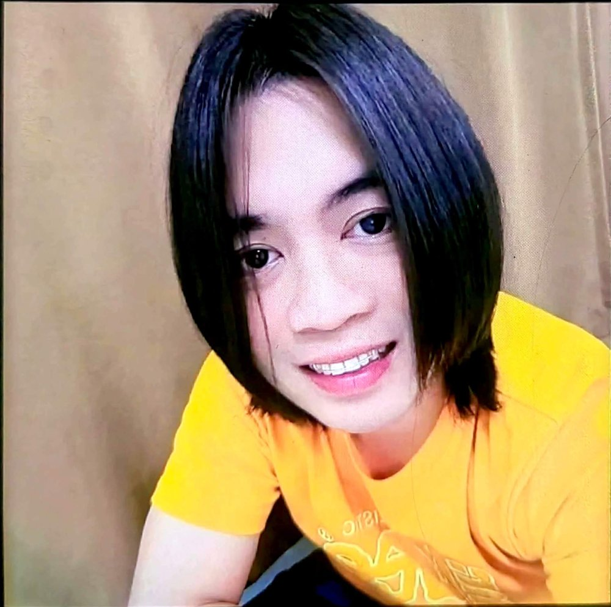
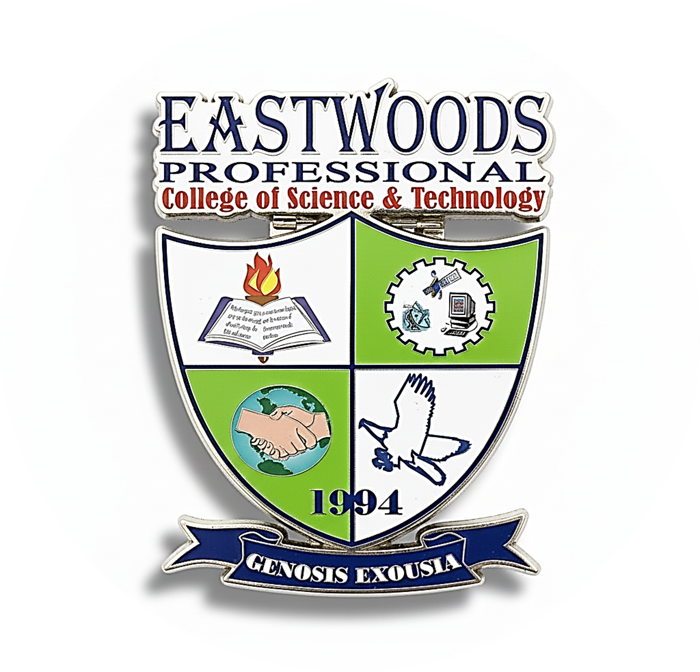

✦Computational Science Project
About
Developer
John Emmanuel D. Trinidad
A Bachelor of Science in Computer Science (BSCS) student passionate about technology, programming, and developing innovative digital solutions.
Course
Free Elective 2: Computational Science
This project was developed as a course requirement for Free Elective 2: Computational Science. It demonstrates the use of computational methods, mathematical models, and technology through interactive systems and simulations.

Submitted To
Sir Alvin Tuazon
Instructor of Free Elective 2: Computational Science, who guided and evaluated the development of this project.

School
Eastwoods Professional College of Science and Technology
The academic institution where this project was developed as part of the Bachelor of Science in Computer Science program.
Academic Year: 2026–2027